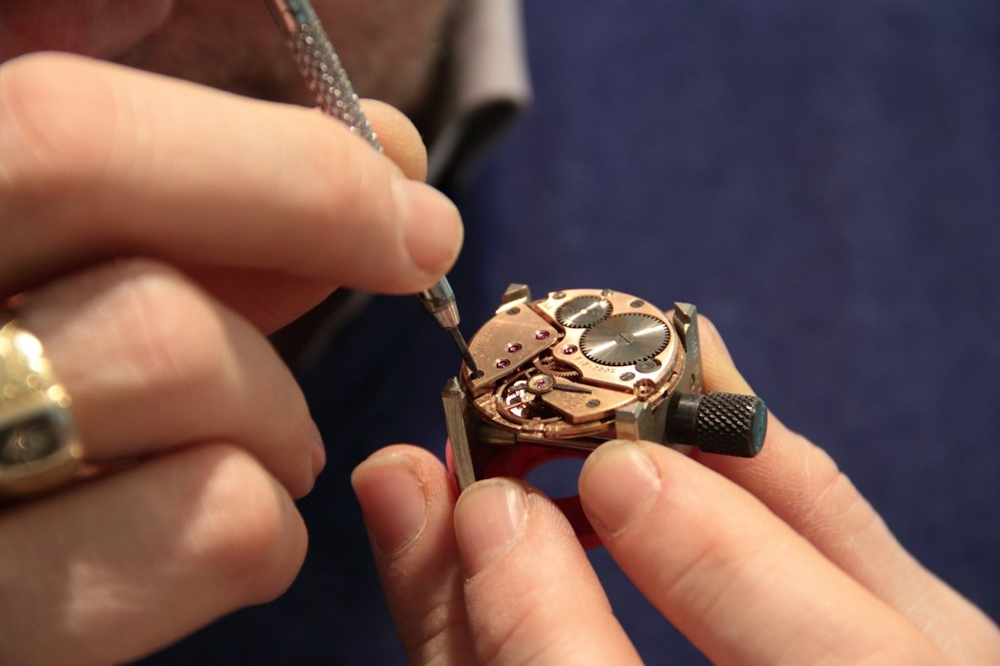
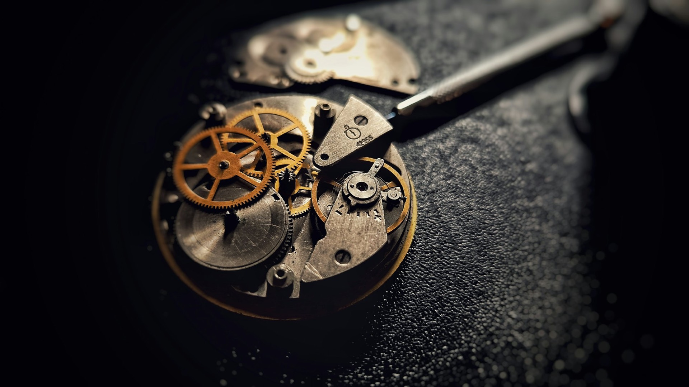
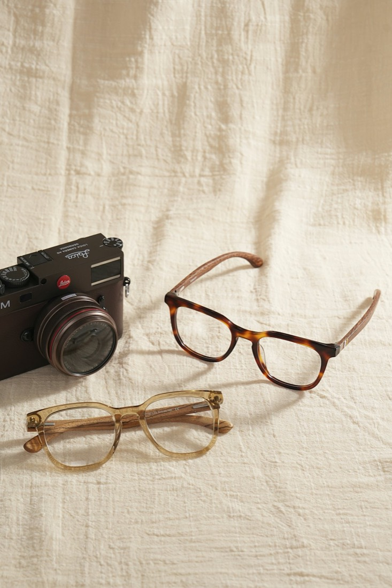
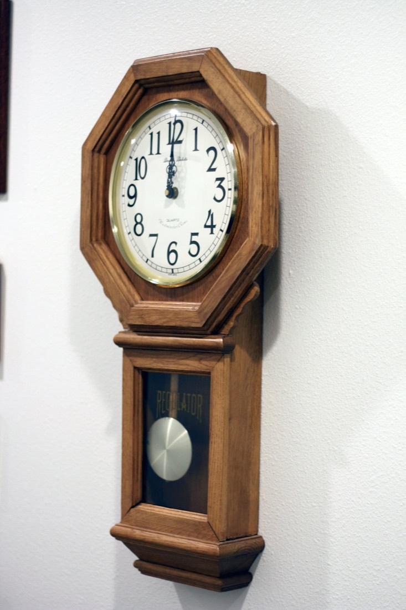
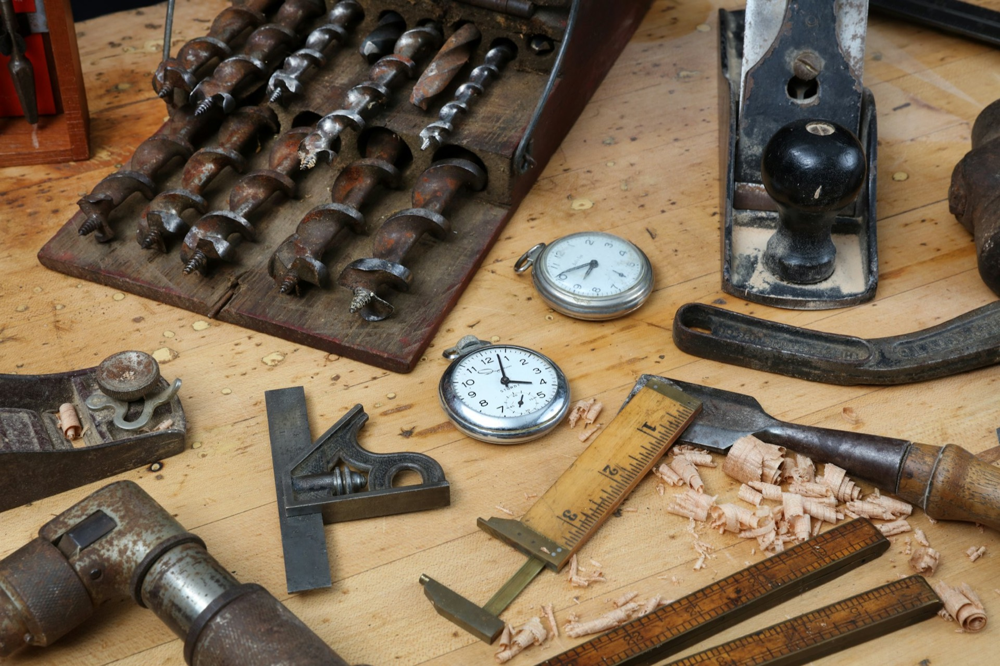

時計の修理・電池交換
時計バンドの調整も（一部ブランド品を除く）。

時計・メガネ・補聴器 新潟県柏崎市東本町
明治36年4月開業。旧名は星野時計店。時計の修理・電池交換から、メガネ、補聴器まで、柏崎のまちの専門店です。
時計・メガネ・補聴器 新潟県柏崎市東本町
明治36年4月開業。旧名は星野時計店。時計の修理・電池交換から、メガネ、補聴器まで、柏崎のまちの専門店です。
文字盤
止まった時計も、
ご相談ください。
時計の修理、電池交換。時計バンドの調整も承ります（一部ブランド品を除く）。
時計のしくみの3Dイメージです
当店はNPO法人 日本－タイ王国メガネボランティアグループに加盟しています。寄付していただいたご不要のメガネに当店用意の新品レンズを入れ、タイの方々にメガネを直接お配りする活動を、毎年続けてきました。
2026年秋のボランティアのため、下取りメガネを募集しています。

時計バンドの調整も（一部ブランド品を除く）。

フレーム、レンズ、修理・調整まで。

初めての方には、まず耳鼻科での検診をおすすめしています。

…
| 営業時間 | 10:00〜16:00 |
|---|---|
| 定休日 | 水曜日 |
修理・電池交換・メガネのご相談は、お電話・メールで。